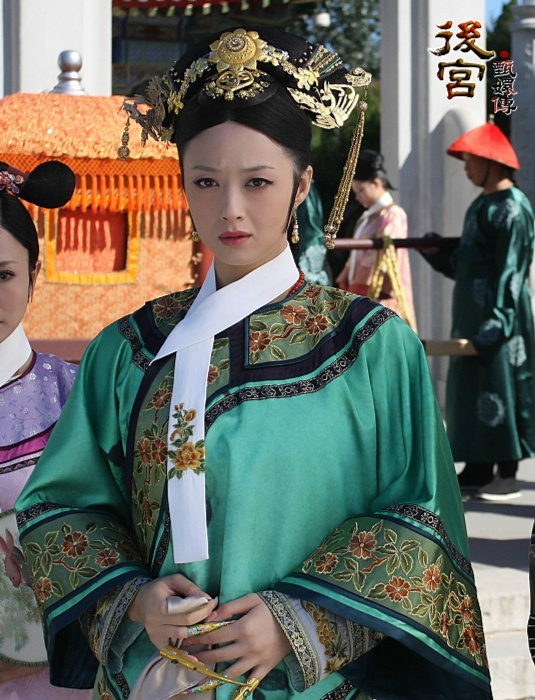
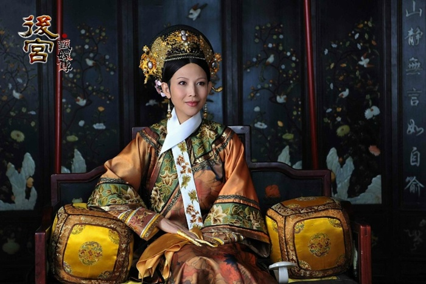
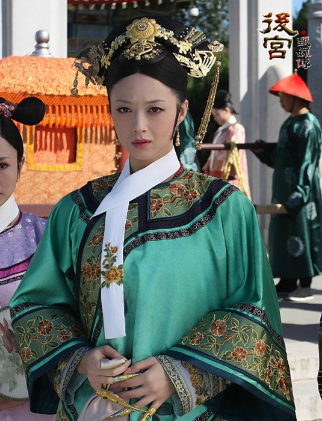
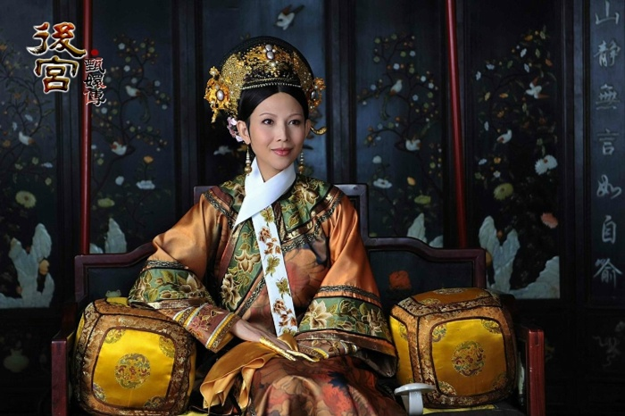

故事介紹
甄嬛生於清朝一官宦人家，是家中的長女。父親甄遠道在朝廷爲官，頗受皇帝器重。雍正元年，太后爲制衡後宮與朝中勢力，充實後庭，以防年羹堯的親妹妹華妃專寵獨大，危及帝位，爲皇帝舉辦了其在位十三年間唯一的一次選秀。十七歲的甄嬛與好姐妹眉莊、陵容奉命參選，甄嬛抱著充數的念頭薄施粉黛，只等皇上“撂牌子”讓她落選。皇帝偏相中了甄嬛的智慧、氣節與端莊，把甄嬛留在了宮中，三姐妹一同入選後宮，都成爲了皇帝的妃嬪。 初入宮的甄嬛與眉莊、陵容結成一派，周旋在皇后和華妃兩派之間。皇后仁懦，華妃囂張，步步緊逼，甄嬛受辱，幾度險些喪命于後宮。等到眉莊被冤，甄嬛初次懷孕被害流産，陵容變心後，天真的甄嬛逐漸感受到後宮的寒冷，慢慢成爲後宮精明的女子。皇帝發現年羹堯的野心，令甄遠道剪除了年氏一族，甄嬛也用智慧鬥倒了華妃。但不久甄嬛又再次遭人暗算而失寵，父親也被文字獄牽連而遭牢獄之災，生下女兒朧月後，心灰意冷的甄嬛選擇出宮修行。 甄嬛在甘露寺受盡欺淩，幸得果親王十七爺悉心照顧，二人在患難中相親相愛，只等有機會一起遠走高飛，過平常人的生活。十七爺去滇南微服巡視，誤傳死訊，甄嬛爲替十七爺報仇，也爲保全腹中十七爺的骨肉，設計與皇帝相遇，重回宮中。爲了掩人耳目，皇帝假稱甄嬛是四阿哥弘曆的生母，以鈕祜祿氏之姓迎回宮中，封爲熹妃。甄嬛回宮後，十七爺卻活著回來，二人感慨爲命運所弄，但爲了肚子裏的孩子，甄嬛狠心斷絕了十七爺的念想，並決心靠權利保護自己的親人。甄嬛回宮後不久，太后病逝，後宮人心浮動，危機四伏。 暗戀十七爺的葉瀾依遷怒甄嬛，放貓害她動了胎氣，早産生下與十七爺的一對子女，公主靈犀和六阿哥弘曕，甄嬛受封熹貴妃，盡享恩寵。但皇后誣陷甄嬛與太醫溫實初私通生下雙子，逼迫滴血驗子，溫實初一怒之下自殘，眉莊受驚早産一女而死，臨死前將女兒託付給甄嬛。 皇后因沒有子嗣，擔心自己的後位不保，企圖利用陵容小産陷害甄嬛，卻誤打誤撞地讓皇帝發現陵容用暖情香迷惑自己，陵容被囚禁，皇后受牽連被冷落。甄嬛親手捶落腹中不健全的胎兒並嫁禍皇后，借她人之口向皇帝告發純元皇后慘死的真相，皇帝大怒，下旨囚禁皇后，皇后終被扳倒。 雍正皇帝勤政操勞過度，身體每況愈下，開始熱衷煉丹術以求長生。生性多疑的皇帝因聽信謠言，懷疑十七爺和甄嬛有私情，逼迫甄嬛用毒酒殺害十七爺。皇帝駕崩後，四阿哥弘曆登基，甄嬛被尊爲太后，雖然風光無限，但她終究不過是一千古傷心人罷了。
 


